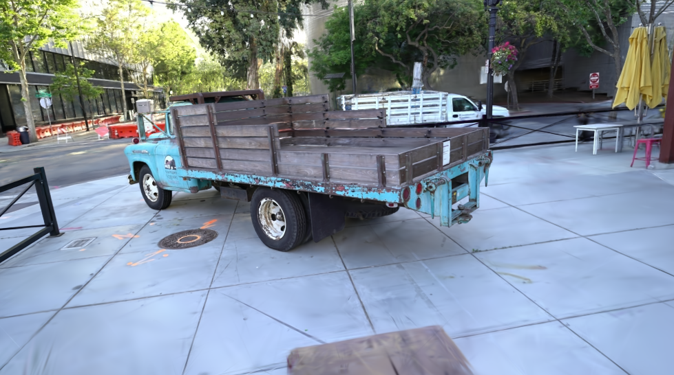
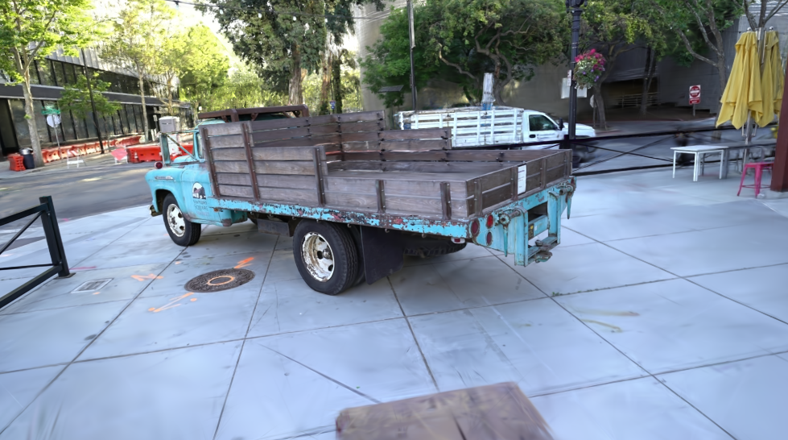
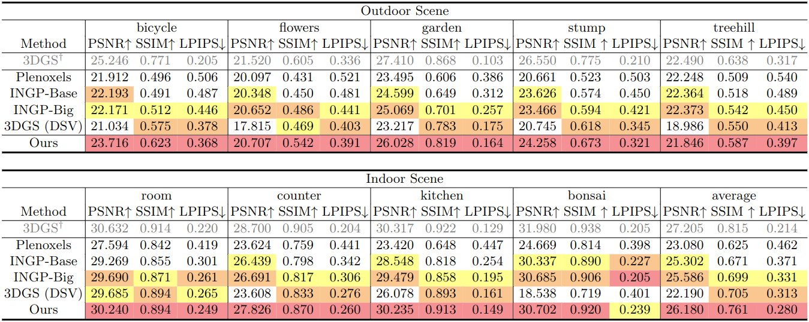
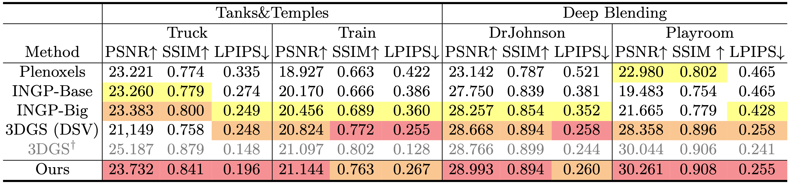

The left shows the results from 3D Gaussian Splatting trained with
dense-small-variance (DSV) random initialization*, and the right shows the results by ours.
Transition from 3DGS to ours simply requires sparse-large-variance (SLV) random initialization and
progressive Gaussian low-pass filtering.
Remarkably, each of our strategies can be implemented with a
simple change in one line of code. The improvement is achieved without any
regularization, training, or external models.
* : Dense-small-variance (DSV) random initialization indicates the random initialization method used in the original 3DGS.
* : Dense-small-variance (DSV) random initialization indicates the random initialization method used in the original 3DGS.
Abstract
3D Gaussian splatting (3DGS) has recently demonstrated
impressive capabilities in real-time novel view synthesis and 3D reconstruction.
However, 3DGS heavily depends on the accurate initialization
derived from Structure-from-Motion (SfM) methods. When trained with
randomly initialized point clouds, 3DGS often fails to maintain its ability
to produce high-quality images, undergoing large performance drops
of 4-5 dB in PSNR in general. Through extensive analysis of SfM initialization
in the frequency domain and analysis of a 1D regression task
with multiple 1D Gaussians, we propose a novel optimization strategy
dubbed RAIN-GS (Relaxing Accurate INitialization Constraint for
3D Gaussian Splatting) that successfully trains 3D Gaussians from randomly
initialized point clouds. We show the effectiveness of our strategy
through quantitative and qualitative comparisons on standard datasets,
largely improving the performance in all settings.
Qualitative Results

 

Qualitative Results (Sparse View Settings)
Quantitative Results
We show the quantitative comparisons of different datasets! 3DGS (DSV) indicates the results of 3DGS trained with dense-small-variance random initialized point clouds, which is the original random initialization strategy used in 3D Gaussian Splatting.†: As 3DGS† is the only method that utilizes SfM point clouds, the values are only included for reference.
Mip-NeRF360 Dataset

Tanks&Temples and Deep Blending dataset

Citation
Acknowledgements
The website template was borrowed from Michaël Gharbi.